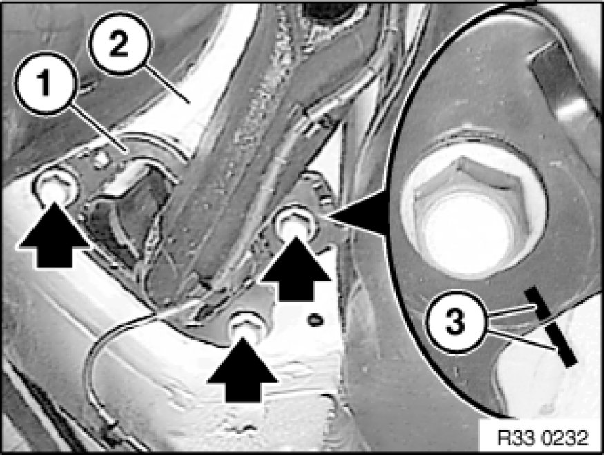
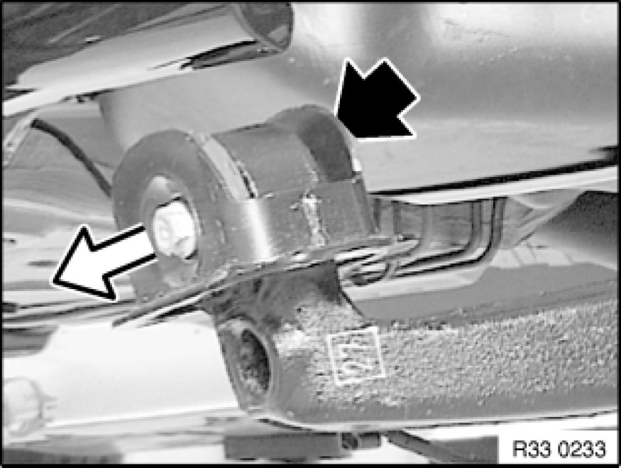
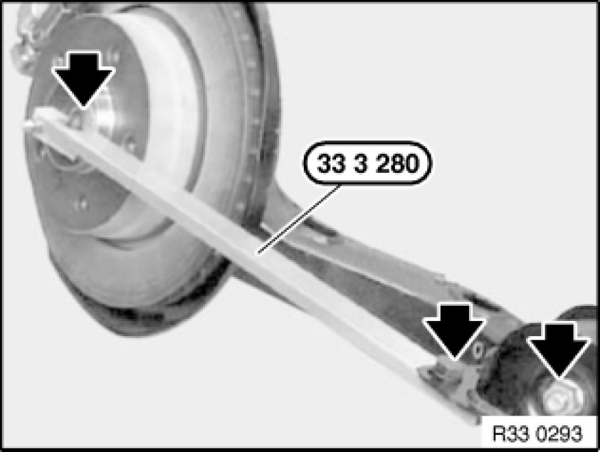
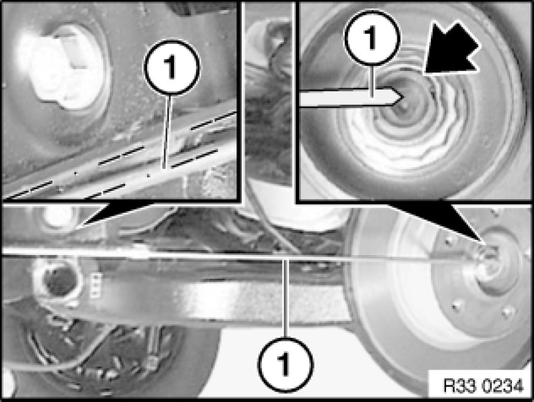

Replacing Bearing Block for Front Trailing Arm
33 32 ... - Replacing bearing block for front trailing arm

Special tools required:
- 33 3 280 33 3 280 Setting Gauge

Necessary preliminary tasks:
- Remove rear wheel Removing or Installing Front or Rear Wheel
- Disconnect plug connection for pulse generator Replacing a Rear Pulse Generator; if necessary, expose lead up to trailing arm
- Only on right side: Disconnect plug connection for brake pad sensor; if necessary, expose lead up to trailing arm

Important!
- Check sensor head and line from pulse generator prior to installation for external damage, replacing if necessary.

Important!
Risk of damage!
Brake hose must not be exposed to tensile loads.
Release screw and remove bracket with brake hose.
Tightening torque 34 32 3AZ 34 32 Brake Lines.

Mark position of bearing block (1) to body (2) with colored mark (3); this simplifies subsequent toe-in adjustment.
Release screws.
Tightening torque 33 32 13AZ Control Arms and Struts (Rear).
Lower workshop jack and pull trailing arm downwards.
Installation:
Check threads for damage; if necessary, repair with Helicoil thread inserts Notes on Repairing Threads.

Unfasten nut.
Pull out screw.
Remove bearing block towards top.
Installation:
Replace self-locking nut.
Tightening torque 33 32 12AZ Control Arms and Struts (Rear).

Installation with special tool:
Installation:
Secure special tool 33 3 280 33 3 280 Setting Gauge to bearing pedestal with a screw and align to wheel center. Place bearing block in position and screw down.
Tightening torque 33 32 12AZ Control Arms and Struts (Rear).

Installation without special tool:
Installation:
Place tube (1) (length = approx. 500 mm, dia. = 16 mm) flat on bearing block, secure with screw clamp and align tube center to wheel center. Screw bearing pedestal down in this position.
Tightening torque 33 32 12AZ Control Arms and Struts (Rear).
After installation:
- Perform chassis alignment check